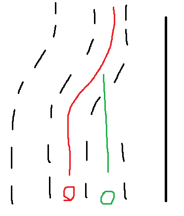

구로디지털단지에서 여의도방향 가는 여의대로인데, 다닌사람은 알겠지만 맨 우측 2개 차로가 하나로 합쳐지는 구간이 있음.
난 그냥 멀쩡히 정상주행 했는데 뒤에서 택시가 갑자기 웬 하이빔을 존나 조지는거임?

이런식으로 된 곳임. 난 빨간색 택시가 초록색
그러더니 더 뒤에 가서는 내 옆에 차 세우고 창문내리더니
'하이빔을 쐈으면 내가 뭔 잘못을 했구나 하고 사과를 해야지 왜 그냥가냐' ㅇㅈㄹ
나야 차선따라 멀쩡히 주행했으니 뭔 개소리냐 그러면서 싸우다 갈길갔는데
나중에 와서 블박보니까 지가 깜빡이도 안켜고 차선 침범해놓고 나한테 이지랄이네 ㅋㅋㅋ
오히려 화내야될건 깜빡이도 안켜고 침범당한 택시의 뒷차인데
택시새끼가 오히려 엄한 나보고 지랄 ㅋㅋ
차번호 깔끔하게 나오게 영상 이어붙여서 난폭운전으로 신고넣긴 했는데 상품권이 잘 갈라나 모르겠네 ㅋㅋ 갔음 좋겠는데
아 저기 차선이 중간에 합쳐져서 좀그렇지
택시 정신나갔나;;